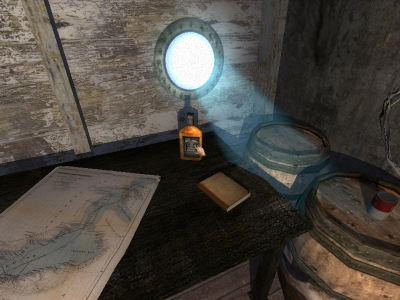
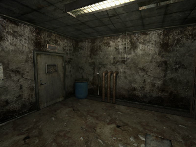

Penumbra
Dieser Artikel wurde für die folgenden Ubuntu-Versionen getestet:
Ubuntu 14.04 Trusty Tahr
Zum Verständnis dieses Artikels sind folgende Seiten hilfreich:
Penumbra  ist eine Horror-Adventure-Serie aus dem Hause Frictional Games . Neben Penumbra: Overture ist noch Penumbra: Black Plague und die Erweiterung Penumbra: Requiem erschienen. Die Erweiterung ist ohne den zweiten Teil nicht spielbar. Wie beim Nachfolger Amnesia: The Dark Descent wird aus der Egoperspektive gespielt.
ist eine Horror-Adventure-Serie aus dem Hause Frictional Games . Neben Penumbra: Overture ist noch Penumbra: Black Plague und die Erweiterung Penumbra: Requiem erschienen. Die Erweiterung ist ohne den zweiten Teil nicht spielbar. Wie beim Nachfolger Amnesia: The Dark Descent wird aus der Egoperspektive gespielt.
In allen drei Teilen muß der junge Physikstudent Philipp diverse Abenteuer bestehen. Im ersten Teil erhält Philipp, nach dem plötzlichen Tod seiner Mutter einen Brief von seinem lange totgeglaubten Vater. Dem Schreiben liegt ein Schlüssel für ein Bankfach bei. Philipp wird in dem Brief gebeten alle Dokumente aus diesem zu vernichten. Statt die Dokumente zu vernichten, studiert Philipp diese und entdeckt neben kryptischen Schriften einige geographische Koordinaten, die nach Grönland führen. Er entschließt sich, der Sache auf den Grund zu gehen... Im zweiten Teil erwacht Philipp in einem abgeschlossenen Raum muß einen Mord im Nachbarzimmer mit anhören. Durch einen Lüftungsschacht entkommt er und findet sich in einer geheimen Forschungsstation wieder... Die Erweiterung läßt eine richtige Story vermissen knüpft aber an den zweiten Teil an. Im Vordergrund stehen Physik-Rätsel.
|  |  |
| Spielszene Overture | Spielszene Black Plague |
Installation¶
Frictional Games Store¶
Nachdem man die Penumbra Collection im Frictional Games Store erworben hat lädt man diese von der in der E-Mail angegebenen Seite herunter. Neben der Collection, welche alle bisher erschienenen Spieletitel beinhaltet, gibt es die Titel als Einzelspiel. Die Installation verläuft bei allen Versionen identisch - lediglich die Namen der Installationsskripte weichen voneinander ab. Für die jeweilige Version die Ausführrechte [1] setzen und die Installation einleiten [2]:
./penumbra_collection.sh
Humble Indie Bundle #2¶
Die Version aus dem Humble Indie Bundle #2 beinhaltet lediglich Penumbra Overture. Die Installation [1] [2] wird über
./penumbra_overture_1.1.sh
gestartet.
Nach erfolgreicher Installation ist der Starter unter "Anwendungen -> Spiele" zu finden.
Hinweis:
Beim ersten Start der Version aus dem Frictional Games Store wird eine Seriennummer benötigt, welche man per E-Mail erhalten hat.
Patches¶
Von frictionalgames.com den Patch für die richtige Spieleversion herunterladen und Ausführrechte [2] setzen. Anschließend das Spiel auf Version 1.1 patchen.
Optionen¶
Einige zusätzliche Funktionen können nur durch bearbeiten der Konfigurationsdatei settings.cfg in einem Editor verwendet werden [3]. Hier im Homeverzeichnis den versteckten Ordner ~/.frictionalgames/Penumbra und dann den Ordner des zu bearbeitenden Spieleteils ansteuern. Die folgenden Einträge können u.a. vorgenommen werden:
| Zusatzoptionen | |
| Eintrag | Beschreibung |
AllowQuickSave="true" | Aktiviert Schnellspeichern mit F4 sowie Laden mit F5 . |
SimpleWeaponSwing="true" | Schwingen der Waffe im Kampfmodus ohne Mausgesten. |
SimpleSwingInOptions="true" | "Einfaches Schwingen" im Optionsmenü anzeigen. |
ShowHealth="true" | Gesundheitsanzeige in der linken, oberen Ecke des Bildschirms. |
FullScreen="false" | Startet das Spiel im Fenstermodus. |
Konfiguration¶
Deutsche Untertitel¶
Um deutsche Untertitel im Spiel zu verwenden das deutsche Windows-Demo von Penumbra: Im Halbschatten bzw. Penumbra: Schwarze Pest herunterladen und mit Wine installieren [4] [5] dieses ggf. vorher entpacken [6]. In den Installationsordner wechseln und aus /redist/config die Datei Deutsch.lang in den config-Ordner der Linuxinstallation kopieren. Die Datei anschließend in einem Editor [3] öffnen und unter dem Abschnitt <CATEGORY Name="SaveNames"> alle Umlaut-Vokale ändern, da sonst das Spiel beim Speichern abstürzt (ä  ae, ü ue und ö oe).
ae, ü ue und ö oe).
Penumbra: Overture¶
In Penumbra: Overture müssen zusätzlich die 2 Zeilen:
<Directory Path="sounds/voices/ger" />
<Directory Path="graphics/lang_specific/ger" />abgeändert werden:
<Directory Path="sounds/voices/eng" />
<Directory Path="graphics/lang_specific/eng" />
Anschließend die Sprache im Spiel auf Deutsch  umstellen.
umstellen.
Demo¶
Eine Demo-Version des jeweiligen Spielteils kann von der Herstellerseite  heruntergeladen und installiert werden.
heruntergeladen und installiert werden.
Problemlösungen¶
Monitorauflösung / Vollbildmodus¶
Penumbra setzt, wenn man wie voreingestellt im Vollbildmodus startet, die Auflösung auf 800 x 600px. Falls beim Beenden des Spiels diese Auflösung erhalten bleibt, startet man das Spiel mit folgenden Optionen [2] und beispielhaften Werten:
./penumbra -windowed -height 800 -width 1280
Hinweis:
Das Spiel scheint im Vollbildmodus zu laufen - befindet sich aber im Fenstermodus.
Tastenkürzel¶
| Penumbra | |
| Taste(n) | Funktion |
| Esc | Hauptmenü öffnen / Im Menü zurückgehen |
| W + A + S + D | Spieler bewegen |
| ⇧ | Laufen |
| Strg | Ducken |
| Schwimmen / Springen | |
| Tab ⇆ | Inventar anzeigen |
| 1 + 2 + 3 + 4 + 5 + 6 + 7 + 8 + 9 | Schnellauswahl im Inventar |
| C | Aufgenommenes Objekt drehen |
| R | Aufgenommenes Objekt drehen |
| Maus bewegen | Sich umsehen |
| N | Notizbuch öffnen |
| P | Persönliche Notizen |
| G | Leuchtstab an/aus |
| F | Taschenlampe an/aus |
 | Interaktion / Objekte werfen |
 | Objekte untersuchen / Auswahl verwerfen |

Infobox¶
| The Penumbra Series | |
| Originaltitel: | Penumbra: Overture / Penumbra: Black Plague / Penumbra: Requiem |
| Genre: | Horror-Adventure |
| Sprache: | |
| Veröffentlichung: | 2007 - 2010 |
| Entwickler: | Frictional Games |
| Systemvoraussetzungen: | > 2 Ghz Prozessor / > 1024 MB RAM / 2 GB Festplattenplatz / Radeon 9600 oder GeForce 4 Grafikkarte |
| Medien: | Download |
| Läuft mit: | nativ |
- Erstellt mit Inyoka
-
 2004 – 2017 ubuntuusers.de • Einige Rechte vorbehalten
2004 – 2017 ubuntuusers.de • Einige Rechte vorbehalten
Lizenz • Kontakt • Datenschutz • Impressum • Serverstatus -
Serverhousing gespendet von